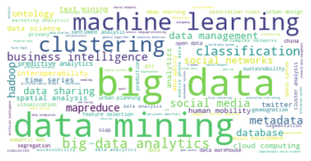

Análisis de publicaciones sobre analytics y big data en Scopus¶
En este tutorial se ejemplifica la realización del análisis exploratorio de datos aplicado a las revistas listadas en Scopus que contienen en sus nombres las palabras big data, data science, business intelligence y analitics.
[1]:
##
## Preparacion
##
import matplotlib
import matplotlib.pyplot as plt
import numpy as np
import pandas as pd
Descripción de la información¶
El archivo scopus-papers.csv contiene la información bibliográfica de los artículos seleccionados. Los nombres de las columnas son autoexplicativos.
Carga de la información¶
[2]:
##
## Lectura de datos
##
papers = pd.read_csv(
"https://raw.githubusercontent.com/jdvelasq/playground/master/datasets/scopus-papers.csv",
sep=",", # separador de campos
thousands=None, # separador de miles para números
decimal=".", # separador de los decimales para números
encoding="latin-1",
) # idioma
papers.info()
<class 'pandas.core.frame.DataFrame'>
RangeIndex: 1902 entries, 0 to 1901
Data columns (total 23 columns):
# Column Non-Null Count Dtype
--- ------ -------------- -----
0 Authors 1902 non-null object
1 Author(s) ID 1902 non-null object
2 Title 1902 non-null object
3 Year 1902 non-null int64
4 Source title 1902 non-null object
5 Volume 1860 non-null float64
6 Issue 1456 non-null object
7 Art. No. 531 non-null object
8 Page start 1411 non-null object
9 Page end 1411 non-null object
10 Page count 2 non-null float64
11 Cited by 1257 non-null float64
12 DOI 1825 non-null object
13 Link 1902 non-null object
14 Affiliations 1889 non-null object
15 Authors with affiliations 1899 non-null object
16 Author Keywords 1793 non-null object
17 Index Keywords 828 non-null object
18 Document Type 1902 non-null object
19 Publication Stage 1902 non-null object
20 Access Type 938 non-null object
21 Source 1902 non-null object
22 EID 1902 non-null object
dtypes: float64(3), int64(1), object(19)
memory usage: 341.9+ KB
Nombres de las revistas¶
[3]:
papers["Source title"].drop_duplicates().sort_values(ascending=True)
[3]:
123 Applied Marketing Analytics
74 Big Data
57 Big Data Research
744 Big data
111 Data Science Journal
82 Data Science and Engineering
0 EPJ Data Science
1901 Easy Care in Wool; Woolmark Business Intellige...
88 Environment and Planning B: Urban Analytics an...
65 International Journal of Business Analytics
417 International Journal of Business Intelligence...
147 International Journal of Business Intelligence...
17 Journal of Big Data
61 Journal of Management Analytics
70 Journal of Marketing Analytics
1900 World Wool Supply to 2005; Woolmark Business I...
Name: Source title, dtype: object
[4]:
##
## Cantidad de revistas
##
papers["Source title"].drop_duplicates().count()
[4]:
16
Cantidad de citas por año por revista¶
[5]:
df = (
papers.groupby(["Source title"])
.sum()[["Cited by"]]
.sort_values("Cited by", ascending=False)
)
df
[5]:
| Cited by | |
|---|---|
| Source title | |
| Journal of Big Data | 2312.0 |
| EPJ Data Science | 1902.0 |
| Data Science Journal | 1468.0 |
| International Journal of Business Intelligence and Data Mining | 1420.0 |
| Big Data | 1164.0 |
| Big Data Research | 926.0 |
| Journal of Management Analytics | 440.0 |
| Environment and Planning B: Urban Analytics and City Science | 370.0 |
| Journal of Marketing Analytics | 253.0 |
| Data Science and Engineering | 222.0 |
| International Journal of Business Analytics | 131.0 |
| Applied Marketing Analytics | 2.0 |
| International Journal of Business Intelligence Research | 1.0 |
| Big data | 0.0 |
| Easy Care in Wool; Woolmark Business Intelligence July 1999 | 0.0 |
| World Wool Supply to 2005; Woolmark Business Intelligence July1999 | 0.0 |
[6]:
##
## Gráfico por defecto usando Matplotlib
##
df.plot.bar()
[6]:
<matplotlib.axes._subplots.AxesSubplot at 0x7f858bf2b668>

[7]:
#
# Personalización
#
import textwrap
TEXTLEN = 40
def bar(
height,
darkness=None,
cmap="Greys",
figsize=(6, 6),
fontsize=11,
edgecolor="k",
linewidth=0.5,
zorder=10,
ylabel=None,
**kwargs,
):
darkness = height if darkness is None else darkness
cmap = plt.cm.get_cmap(cmap)
kwargs["color"] = [
cmap(0.1 + 0.90 * (d - min(darkness)) / (max(darkness) - min(darkness)))
for d in darkness
]
matplotlib.rc("font", size=fontsize)
fig = plt.Figure(figsize=figsize)
ax = fig.subplots()
ax.bar(
x=range(len(height)),
height=height,
edgecolor=edgecolor,
linewidth=linewidth,
zorder=zorder,
alpha = 0.5,
**kwargs,
)
if ylabel is not None:
ax.set_ylabel(ylabel)
xticklabels = height.index
if xticklabels.dtype != "int64":
xticklabels = [
textwrap.shorten(text=text, width=TEXTLEN) for text in xticklabels
]
ax.set_xticks(np.arange(len(height)))
ax.set_xticklabels(xticklabels)
ax.tick_params(axis="x", labelrotation=90)
for x in ["top", "right", "left", "bottom"]:
if x != 'bottom':
ax.spines[x].set_visible(False)
ax.grid(axis="y", color="gray", linestyle=":")
fig.set_tight_layout(True)
return fig
bar(height = df['Cited by'], cmap='Reds', figsize=(6, 8))
[7]:

[8]:
##
## Gráfico usando Altair
##
import altair as alt
df["Source title"] = [p for p in df.index]
alt.Chart(df).mark_bar().encode(
y=alt.Y("Source title:N", sort=alt.EncodingSortField(field="Cited by:Q")),
x="Cited by:Q",
color="Cited by:Q",
)
[8]:
Total de citas por año¶
[9]:
##
## Suma de citas agregada por título y año
##
papers.groupby(["Source title", "Year"], as_index=True).sum()[["Cited by"]]
[9]:
| Cited by | ||
|---|---|---|
| Source title | Year | |
| Applied Marketing Analytics | 2018 | 2.0 |
| 2019 | 0.0 | |
| Big Data | 2013 | 543.0 |
| 2014 | 170.0 | |
| 2015 | 203.0 | |
| ... | ... | ... |
| Journal of Marketing Analytics | 2016 | 12.0 |
| 2017 | 5.0 | |
| 2018 | 7.0 | |
| 2019 | 0.0 | |
| World Wool Supply to 2005; Woolmark Business Intelligence July1999 | 1999 | 0.0 |
89 rows × 1 columns
[10]:
#
# Los ejes para la gráfica deben ser campos
# en el DataFrame
#
df = papers.groupby(["Source title", "Year"], as_index=False).sum()[["Source title", "Year", "Cited by"]]
df
[10]:
| Source title | Year | Cited by | |
|---|---|---|---|
| 0 | Applied Marketing Analytics | 2018 | 2.0 |
| 1 | Applied Marketing Analytics | 2019 | 0.0 |
| 2 | Big Data | 2013 | 543.0 |
| 3 | Big Data | 2014 | 170.0 |
| 4 | Big Data | 2015 | 203.0 |
| ... | ... | ... | ... |
| 84 | Journal of Marketing Analytics | 2016 | 12.0 |
| 85 | Journal of Marketing Analytics | 2017 | 5.0 |
| 86 | Journal of Marketing Analytics | 2018 | 7.0 |
| 87 | Journal of Marketing Analytics | 2019 | 0.0 |
| 88 | World Wool Supply to 2005; Woolmark Business I... | 1999 | 0.0 |
89 rows × 3 columns
[11]:
#
# Gráfica usando seaborn
#
import seaborn as sns
sns.relplot(
x = 'Year',
y = 'Source title',
size = 'Cited by',
sizes = (10, 500),
alpha = 0.8,
palette = 'viridis',
data = df);
plt.xticks(rotation=90);
/usr/local/lib/python3.6/dist-packages/seaborn/axisgrid.py:856: UserWarning: Tight layout not applied. The left and right margins cannot be made large enough to accommodate all axes decorations.
self.fig.tight_layout()

[12]:
#
# Usando Altair
#
alt.Chart(df).mark_circle().encode(
alt.X(
"Year:Q", scale=alt.Scale(domain=(2002, 2019)), axis=alt.Axis(labelAngle=270)
),
alt.Y("Source title:N"),
size="Cited by",
color="Cited by",
)
[12]:
[13]:
#
# Personalizacion
#
def bubble(
X,
darkness=None,
figsize=(6, 6),
cmap="Greys",
grid_lw=1.0,
grid_c="gray",
grid_ls=":",
fontsize=11,
**kwargs,
):
matplotlib.rc("font", size=fontsize)
fig = plt.Figure(figsize=figsize)
ax = fig.subplots()
cmap = plt.cm.get_cmap(cmap)
x = X.copy()
size_max = x.max().max()
size_min = x.min().min()
if darkness is None:
darkness = x
darkness = darkness.loc[:, x.columns]
color_max = darkness.max().max()
color_min = darkness.min().min()
for idx, row in enumerate(x.index.tolist()):
sizes = [
150 + 1000 * (w - size_min) / (size_max - size_min) if w != 0 else 0
for w in x.loc[row, :]
]
colors = [
cmap(0.2 + 0.8 * (w - color_min) / (color_max - color_min))
for w in darkness.loc[row, :]
]
# return range(len(x.columns)), [idx] * len(x.columns)
ax.scatter(
list(range(len(x.columns))),
[idx] * len(x.columns),
marker="o",
s=sizes,
alpha=1.0,
c=colors,
edgecolors="k",
zorder=11,
# **kwargs,
)
for idx, row in enumerate(x.iterrows()):
ax.hlines(
idx, -1, len(x.columns), linewidth=grid_lw, color=grid_c, linestyle=grid_ls,
)
for idx, col in enumerate(x.columns):
ax.vlines(
idx, -1, len(x.index), linewidth=grid_lw, color=grid_c, linestyle=grid_ls,
)
mean_color = 0.5 * (color_min + color_max)
for idx_col, col in enumerate(x.columns):
for idx_row, row in enumerate(x.index):
if x[col][row] != 0:
if darkness[col][row] >= 0.8 * mean_color:
text_color = "w"
else:
text_color = "k"
ax.text(
idx_col,
idx_row,
"{}".format(x[col][row])
if x[col][row].dtype == "int64"
else "{:.2f}".format(x[col][row]),
va="center",
ha="center",
zorder=12,
color=text_color,
)
ax.set_aspect("equal")
ax.set_xlim(-1, len(x.columns))
ax.set_ylim(-1, len(x.index) + 1)
ax.set_xticks(np.arange(len(x.columns)))
ax.set_xticklabels(x.columns)
ax.tick_params(axis="x", labelrotation=90)
ax.xaxis.tick_top()
ax.invert_yaxis()
ax.set_yticks(np.arange(len(x.index)))
ax.set_yticklabels(x.index)
for x in ["top", "right", "left", "bottom"]:
ax.spines[x].set_visible(False)
fig.set_tight_layout(True)
return fig
[14]:
M = pd.pivot_table(
df, values="Cited by", index="Year", columns="Source title", fill_value=0,
)
M
[14]:
| Source title | Applied Marketing Analytics | Big Data | Big Data Research | Big data | Data Science Journal | Data Science and Engineering | EPJ Data Science | Easy Care in Wool; Woolmark Business Intelligence July 1999 | Environment and Planning B: Urban Analytics and City Science | International Journal of Business Analytics | International Journal of Business Intelligence Research | International Journal of Business Intelligence and Data Mining | Journal of Big Data | Journal of Management Analytics | Journal of Marketing Analytics | World Wool Supply to 2005; Woolmark Business Intelligence July1999 |
|---|---|---|---|---|---|---|---|---|---|---|---|---|---|---|---|---|
| Year | ||||||||||||||||
| 1999 | 0 | 0 | 0 | 0 | 0 | 0 | 0 | 0 | 0 | 0 | 0 | 0 | 0 | 0 | 0 | 0 |
| 2003 | 0 | 0 | 0 | 0 | 50 | 0 | 0 | 0 | 0 | 0 | 0 | 0 | 0 | 0 | 0 | 0 |
| 2005 | 0 | 0 | 0 | 0 | 0 | 0 | 0 | 0 | 0 | 0 | 0 | 213 | 0 | 0 | 0 | 0 |
| 2006 | 0 | 0 | 0 | 0 | 144 | 0 | 0 | 0 | 0 | 0 | 0 | 140 | 0 | 0 | 0 | 0 |
| 2007 | 0 | 0 | 0 | 0 | 307 | 0 | 0 | 0 | 0 | 0 | 0 | 225 | 0 | 0 | 0 | 0 |
| 2008 | 0 | 0 | 0 | 0 | 81 | 0 | 0 | 0 | 0 | 0 | 0 | 151 | 0 | 0 | 0 | 0 |
| 2009 | 0 | 0 | 0 | 0 | 233 | 0 | 0 | 0 | 0 | 0 | 0 | 95 | 0 | 0 | 0 | 0 |
| 2010 | 0 | 0 | 0 | 0 | 44 | 0 | 0 | 0 | 0 | 0 | 0 | 197 | 0 | 0 | 0 | 0 |
| 2011 | 0 | 0 | 0 | 0 | 38 | 0 | 0 | 0 | 0 | 0 | 0 | 56 | 0 | 0 | 0 | 0 |
| 2012 | 0 | 0 | 0 | 0 | 31 | 0 | 514 | 0 | 0 | 0 | 0 | 40 | 0 | 0 | 0 | 0 |
| 2013 | 0 | 543 | 0 | 0 | 327 | 0 | 166 | 0 | 0 | 0 | 0 | 57 | 0 | 0 | 131 | 0 |
| 2014 | 0 | 170 | 79 | 0 | 70 | 0 | 391 | 0 | 0 | 40 | 0 | 91 | 147 | 114 | 71 | 0 |
| 2015 | 0 | 203 | 499 | 0 | 20 | 0 | 247 | 0 | 0 | 26 | 0 | 99 | 1395 | 172 | 27 | 0 |
| 2016 | 0 | 109 | 173 | 0 | 46 | 129 | 363 | 0 | 0 | 49 | 0 | 41 | 465 | 78 | 12 | 0 |
| 2017 | 0 | 129 | 120 | 0 | 66 | 70 | 162 | 0 | 210 | 7 | 0 | 7 | 220 | 57 | 5 | 0 |
| 2018 | 2 | 10 | 55 | 0 | 11 | 23 | 59 | 0 | 122 | 8 | 1 | 8 | 83 | 19 | 7 | 0 |
| 2019 | 0 | 0 | 0 | 0 | 0 | 0 | 0 | 0 | 38 | 1 | 0 | 0 | 2 | 0 | 0 | 0 |
[36]:
bubble(
M.transpose(),
darkness=None,
figsize=(15, 15),
cmap="Oranges",
)
[36]:

Palabras claves más frecuentes¶
[16]:
#
# 1.-- Elimina los registros con valor NaN
# words es un objeto pandas.Series
#
words = papers["Author Keywords"].dropna()
type(words)
[16]:
pandas.core.series.Series
[17]:
words.head()
[17]:
0 Geo-location data; Human mobility; Resilience;...
1 Language analysis; LIWC; Moral foundations the...
2 Gravity model; Media ecosystem; News spreading...
3 Centrality measures; Community Structure; Infl...
4 Cholesterol; Diabetes; Digital purchase record...
Name: Author Keywords, dtype: object
[18]:
#
# 2.-- Parte las cadenas por el ';'
#
words = words.map(lambda w: w.split(';'))
words.head()
[18]:
0 [Geo-location data, Human mobility, Resilien...
1 [Language analysis, LIWC, Moral foundations ...
2 [Gravity model, Media ecosystem, News spread...
3 [Centrality measures, Community Structure, I...
4 [Cholesterol, Diabetes, Digital purchase rec...
Name: Author Keywords, dtype: object
[19]:
#
# 3.-- Elimina los espacios en blanco al principio y
# final de cada palabra clave y convierte la
# cadena en minúsculas
#
words = words.map(lambda w: [p.strip().lower() for p in w])
words.head()
[19]:
0 [geo-location data, human mobility, resilience...
1 [language analysis, liwc, moral foundations th...
2 [gravity model, media ecosystem, news spreadin...
3 [centrality measures, community structure, inf...
4 [cholesterol, diabetes, digital purchase recor...
Name: Author Keywords, dtype: object
[20]:
#
# 3.-- Genera un registro por cada palabra clave
#
words = words.explode()
words.head()
[20]:
0 geo-location data
0 human mobility
0 resilience
0 social media
1 language analysis
Name: Author Keywords, dtype: object
[21]:
#
# 4.-- Cuenta las palabras clave.
# Este es a pandas.Series con las palabras clave
# como indices
#
words = words.value_counts()
words
[21]:
big data 167
data mining 134
machine learning 57
clustering 41
big data analytics 37
...
hybrid wavelet kernel 1
bare ownership price 1
land use mix 1
local linear radial basis functional neural network 1
ecocommunity 1
Name: Author Keywords, Length: 6368, dtype: int64
[22]:
#
# 5.-- Top palabras más usadas
#
words = words.sort_values(ascending=False)
words.head(10)
[22]:
big data 167
data mining 134
machine learning 57
clustering 41
big data analytics 37
classification 33
business intelligence 31
metadata 30
social media 29
mapreduce 26
Name: Author Keywords, dtype: int64
[23]:
#
# 6.-- Para usar Altair es necesario convertir
# el objeto pandas.Series en un pandas.DataFrame
#
words = words.to_frame()
words
[23]:
| Author Keywords | |
|---|---|
| big data | 167 |
| data mining | 134 |
| machine learning | 57 |
| clustering | 41 |
| big data analytics | 37 |
| ... | ... |
| university proximity | 1 |
| hbase | 1 |
| document store | 1 |
| social capital | 1 |
| privacy-preserving association rule mining | 1 |
6368 rows × 1 columns
[24]:
#
# 7.-- Se transforma el indice en una columna
# del dataframe
#
words = words.reset_index()
words
[24]:
| index | Author Keywords | |
|---|---|---|
| 0 | big data | 167 |
| 1 | data mining | 134 |
| 2 | machine learning | 57 |
| 3 | clustering | 41 |
| 4 | big data analytics | 37 |
| ... | ... | ... |
| 6363 | university proximity | 1 |
| 6364 | hbase | 1 |
| 6365 | document store | 1 |
| 6366 | social capital | 1 |
| 6367 | privacy-preserving association rule mining | 1 |
6368 rows × 2 columns
[25]:
alt.Chart(words[0:20]).mark_bar().encode(
x="Author Keywords:Q",
y=alt.Y("index:N",
sort=alt.EncodingSortField(field="index:Q")),
color="Author Keywords:Q"
)
[25]:
[26]:
#
# 8.-- Wordcloud
#
from wordcloud import ImageColorGenerator, WordCloud
words_dic = {key: value for key, value in zip(words['index'], words['Author Keywords'])}
wordcloud = WordCloud(
max_font_size=50, max_words=100, background_color="white"
).generate_from_frequencies(words_dic)
plt.figure()
plt.imshow(wordcloud, interpolation="bilinear")
plt.axis("off")
plt.show()

Contribuciones por país de origen¶
Uno de los gráficos comúnmente usados en los mapeos sistemáticos de literatura es la cantidad de artículos por país de origen. Este gráfico da una idea de en que lugares se está concentrando la investigación sobre el tópico abordado. A continuación se describe el código para este gráfico.
[27]:
#
# 1.-- Borra NA
#
affiliations = papers["Affiliations"].dropna()
[28]:
#
# 2.-- Obtiene la afiliación por autor
#
affiliations = affiliations.map(lambda w: w.split(';'))
affiliations
[28]:
0 [Department of Civil, Environmental, and Const...
1 [Empirical Studies of Conflict Project, Woodro...
2 [L3S Research Center, Leibniz-University, Hann...
3 [LRIT URAC No 29, Faculty of Science, Rabat IT...
4 [Nokia Bell Labs, Cambridge, United Kingdom, ...
...
1895 [Institute of Geodesy and Cartography, ul. Jas...
1896 [Dept of Geography and Human Environment, Envi...
1897 [ESPACE, UMR 6012, CNRS, 74, rue Louis Pasteur...
1898 [Centre for Geo-Information, Wageningen UR, PO...
1899 [Institute for Geoinformatics, University of M...
Name: Affiliations, Length: 1889, dtype: object
[29]:
#
# 3.-- Ejemplo de una afiliacion
#
affiliations[0]
[29]:
['Department of Civil, Environmental, and Construction Engineering, University of Central Florida, Orlando, United States',
' Media Laboratory, Massachusetts Institute of Technology, Cambridge, United States']
[30]:
#
# 4.-- Extrae el nombre del país (ultima posición)
#
affiliations = affiliations.map(lambda w: [x.split(',')[-1].strip() for x in w])
affiliations
[30]:
0 [United States, United States]
1 [United States, Qatar, United States, United S...
2 [Germany, Chile, Chile, Italy]
3 [Morocco, France, France]
4 [United Kingdom, Italy, United Kingdom, United...
...
1895 [Poland]
1896 [Israel]
1897 [France]
1898 [Netherlands, Australia]
1899 [Germany, Germany]
Name: Affiliations, Length: 1889, dtype: object
[31]:
#
# 5.-- Expande la columna
#
affiliations = affiliations.explode()
affiliations
[31]:
0 United States
0 United States
1 United States
1 Qatar
1 United States
...
1897 France
1898 Netherlands
1898 Australia
1899 Germany
1899 Germany
Name: Affiliations, Length: 3963, dtype: object
[32]:
#
# 6.-- Cuenta las ocurrencias de cada país
#
affiliations = affiliations.value_counts()
affiliations
[32]:
United States 1089
China 457
India 295
United Kingdom 250
Japan 239
...
RTL â RTL 1
Think3 Inc. 1
Kenya 1
French Polynesia 1
Namibia 1
Name: Affiliations, Length: 101, dtype: int64
[33]:
#
# 7.-- Worldmap
#
!curl -0 https://raw.githubusercontent.com/jdvelasq/playground/master/datasets/worldmap.data > worldmap.data
% Total % Received % Xferd Average Speed Time Time Time Current
Dload Upload Total Spent Left Speed
100 361k 100 361k 0 0 465k 0 --:--:-- --:--:-- --:--:-- 465k
[34]:
import matplotlib
def worldmap(
x, cmap="Pastel2", figsize=(6, 6), legend=True, fontsize=11, *args, **kwargs,
):
matplotlib.rc("font", size=fontsize)
fig = plt.Figure(figsize=figsize)
ax = fig.subplots()
cmap = plt.cm.get_cmap(cmap)
df = x.to_frame()
df["color"] = x.map(lambda w: 0.1 + 0.9 * (w - x.min()) / (x.max() - x.min()))
with open("worldmap.data", "r") as f:
countries = json.load(f)
for country in countries.keys():
data = countries[country]
for item in data:
ax.plot(item[0], item[1], "-k", linewidth=0.5)
if country in x.index.tolist():
ax.fill(item[0], item[1], color=cmap(df.color[country]))
#
xmin, xmax = ax.get_xlim()
ymin, ymax = ax.get_ylim()
xleft = xmax - 0.02 * (xmax - xmin)
xright = xmax
xbar = np.linspace(xleft, xright, 10)
ybar = np.linspace(ymin, ymin + (ymax - ymin), 100)
xv, yv = np.meshgrid(xbar, ybar)
z = yv / (ymax - ymin) - ymin
ax.pcolormesh(xv, yv, z, cmap=cmap)
#
pos = np.linspace(ymin, ymin + (ymax - ymin), 11)
value = [round(x.min() + (x.max() - x.min()) * i / 10, 0) for i in range(11)]
for i in range(11):
ax.text(
xright + 0.4 * (xright - xleft),
pos[i],
str(int(value[i])),
ha="left",
va="center",
)
ax.plot(
[xleft - 0.1 * (xright - xleft), xleft - 0.1 * (xright - xleft)],
[ymin, ymax],
color="gray",
linewidth=1,
)
for i in range(11):
ax.plot(
[xleft - 0.0 * (xright - xleft), xright],
[pos[i], pos[i]],
linewidth=2.0,
color=cmap((11 - i) / 11),
)
ax.set_aspect("equal")
ax.axis("on")
ax.set_xticks([])
ax.set_yticks([])
ax.spines["bottom"].set_color("gray")
ax.spines["top"].set_color("gray")
ax.spines["right"].set_color("gray")
ax.spines["left"].set_color("gray")
fig.set_tight_layout(True)
return fig
[35]:
worldmap(affiliations, figsize=(12, 8))
[35]:

[ ]: